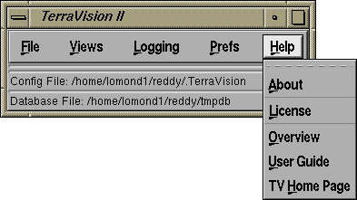
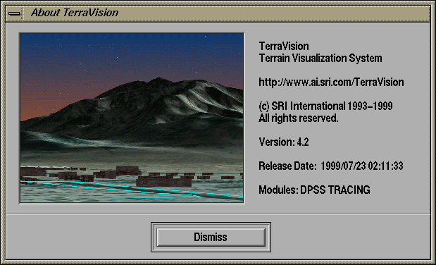

6. The "Help" Menu

The TerraVision help offers a number of options for finding out
information about your current TerraVision binary, as well
locating information about how to use TerraVision, and
finding the TerraVision home page where new updates and materials are posted.
About
The About window of TerraVision tells you various bits of useful
information about the product that you have installed. For example,
this is where you can find the version number of your current binary
as well as its release date. Another useful display is a list of the
modules that this binary was compiled with. Currently, the following
modules may appear listed in your about window:
- DPSS - if this module is displayed, then your TerraVision
binary has been compiled with support for reading tiled data
from a DPSS (
Distributed-Parallel Storage System).
- TRACING - if this module is displayed, then your
TerraVision binary has been compiled with tracing
support. This means that the Debug entries in the File menu
will output diagnostic tracing information to your shell.
Otherwise these options will have no effect.
- SPROC-PTHR - if this module is displayed, then your
TerraVision binary has been compiled using SRI's pthread
emulation libary for the SGI range of workstations. If this
module is not displayed, then the native pthread library
was used.
- CAVE - if this module is displayed, then your
TerraVision binary has been compiled with the CAVE library in
order to enable it to display using a display supported by
this library, e.g. the CAVE, ImmersaDesk, etc.
For example, the About window below tells us that this verion of
TerraVision is V4.0 and that it has been compiled with DPSS support
and debug tracing enabled. We can also infer that it was compiled with
the native pthreads library, and not SRI's sproc-based emulation layer.

License
When you first run TerraVision, and whenever you install and run a new
version, then you will be presented with the TerraVision License
Agreement. You have to accept this agreement in order to use the
TerraVision system. This option will simply display the license again
so that you may puruse its contents. Note that you can also force
TerraVision to present the license requester at start up by using the
-license command line option.
Overview
This option will use a web browser installed on your machine in order
to view a web page that gives an overview of the TerraVision system.
The URL of this page is
http://www.ai.sri.com/TerraVision/pubs/overview/overview.html
User Guide
This option will use a web browser installed on your machine in order
to view this user guide. This lets you access all of the information
about using TerraVision from within the application itself. By
default, TerraVision will use the Netscape web browser to display web
pages. The URL of this user guide is
http://www.ai.sri.com/TerraVision/guide/
TV Home Page
This option will use a web browser installed on your machine in order
to view the TerraVision home page. This is where all information about
TerraVision can be found, and it is also where the latest release can
be downloaded from, as well a number of sample terrain datasets. By
default, TerraVision will use the Netscape web browser. The URL of
the TerraVision home page is:
http://www.ai.sri.com/TerraVision/
User Guide Contents /
TerraVision Home Page